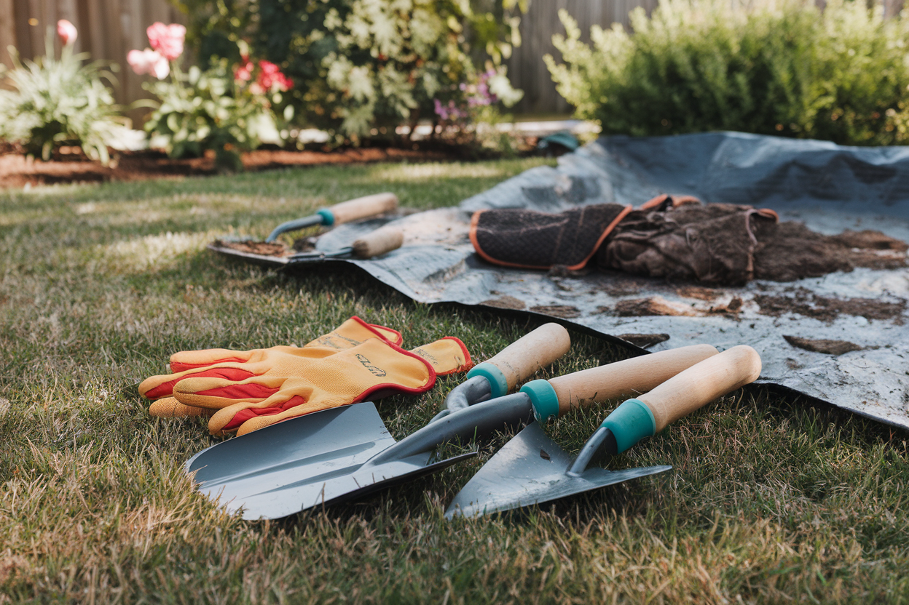
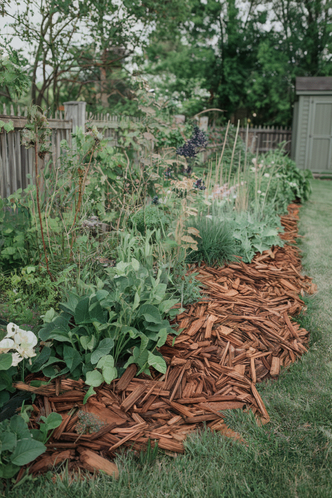
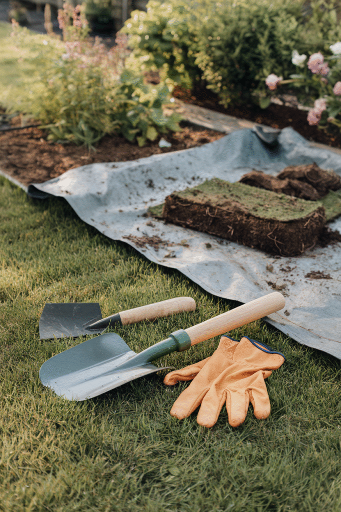
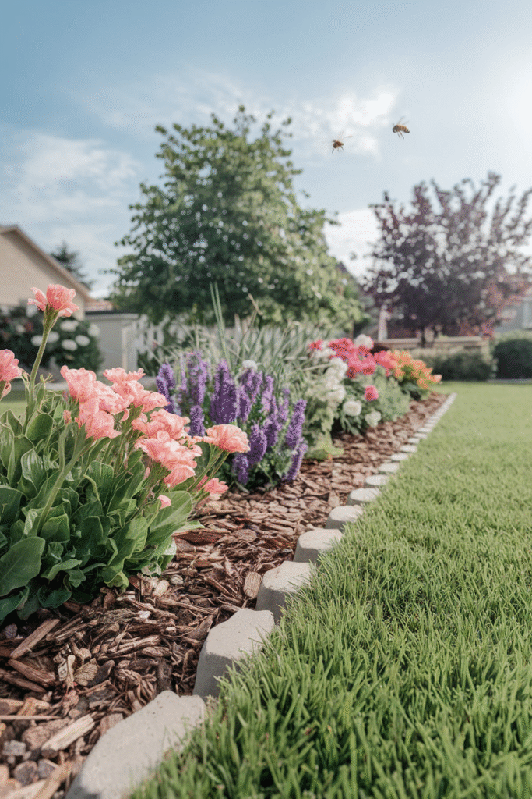
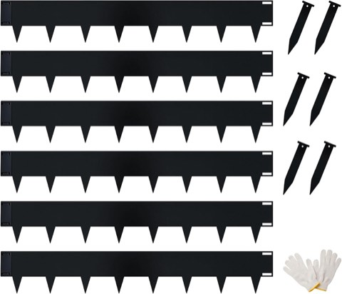

Choosing an edging material is one decision. Actually digging and shaping the edge is a separate skill entirely.
This covers the physical technique, the part that determines whether the edge looks crisp and intentional, or vaguely dug and uneven, regardless of which material eventually goes in it.

1. Choosing a Style for the Garden
A soft, curved edge suits a cottage or informal garden; a crisp, straight edge suits a more modern or formal layout.
This decision should echo the rest of the garden's existing lines, an edge style that fights the garden's overall shape reads as an afterthought rather than a considered choice.


2. Keeping the Edge Maintained
A quick re-cut every few weeks during the growing season keeps grass from creeping back across the line, which happens faster than most people expect.
This maintenance habit matters more for a soil-cut edge than for a hard material edge, since there's nothing physically blocking regrowth beyond the clean line itself.
3. Mulching the Edge
A layer of mulch along the freshly cut edge finishes the look and helps the line hold its shape longer before the next maintenance pass.
Bare dirt along a fresh edge looks unfinished even when the cut itself is clean, mulch is what makes the whole thing read as complete.
4. Smoothing and Shaping
Cleaning up the cut edge after the initial dig, removing loose soil, straightening any wobble in the line, is what separates a rough first pass from a genuinely finished edge.
This step is easy to rush, but it's the difference between an edge that reads as deliberate and one that reads as merely attempted.
5. Digging the Edge
A clean, angled cut, roughly 45 degrees, several inches deep, creates a defined trench that physically separates the bed from the lawn, not just a visual line.
Working in small sections, rather than trying to dig the entire perimeter in one pass, keeps the cut consistent throughout.
6. The Tools That Actually Matter
A half-moon edger or a flat spade, a garden hose for marking curves, and a basic pair of gloves cover genuinely everything required, no specialized equipment needed.
A string line and stakes help keep straight sections honest, where a hose is more useful for anything curved.

7. Planning Before Digging
Marking the intended line with a hose or rope before cutting anything lets the shape get adjusted freely, with zero commitment, before a single shovel touches the ground.
Standing back and viewing the marked line from a distance, not just up close, catches awkward curves that are hard to see while standing right next to them.
8. Why Bother With an Edge at All
A defined edge is what actually stops grass from creeping into a bed and mulch from drifting onto the lawn, it's function first, aesthetics second.
It's also one of the fastest ways to make an entire garden look more maintained, even before anything else in the bed gets touched.


Metal Garden Edging, 20 ft, 40 Inch Sections, 6 Pack, Black Landscape Border
Shop on AmazonGo Forth and Edge With Confidence
None of this requires special skill, just patience through the planning and digging stages.
Mark the line, dig it cleanly, and maintain it regularly, the technique matters more than any tool or material choice that comes after it.
Get that part right first, and almost any edging material will look intentional once it's set into place.